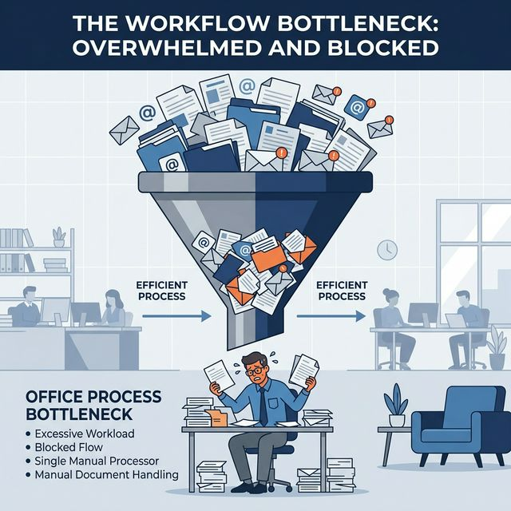
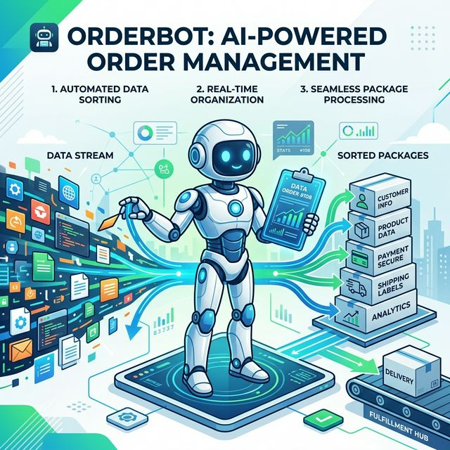
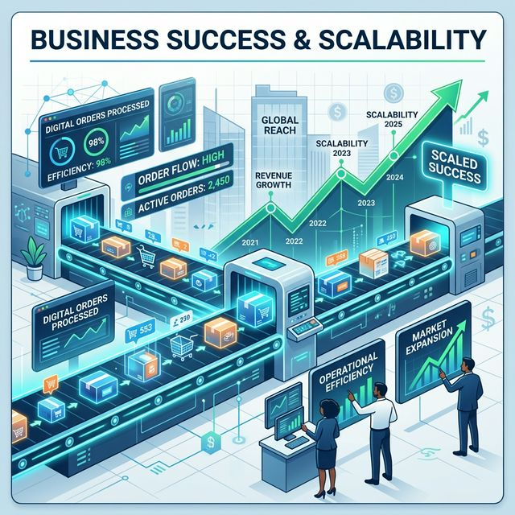

Prepared for the Head of Operations

The manual intervention required for every incoming order slows us down and scales poorly.

OrderBot is an Autonomous AI Agent that connects directly to our systems via API tools to instantly execute the decision tree 24/7.

Deploy OrderBot to "Shadow Mode" to passively read emails and draft responses without actually sending them. Ops humans verify accuracy.
OrderBot handles unambiguous "Happy Path" orders autonomously; exceptions route to human.